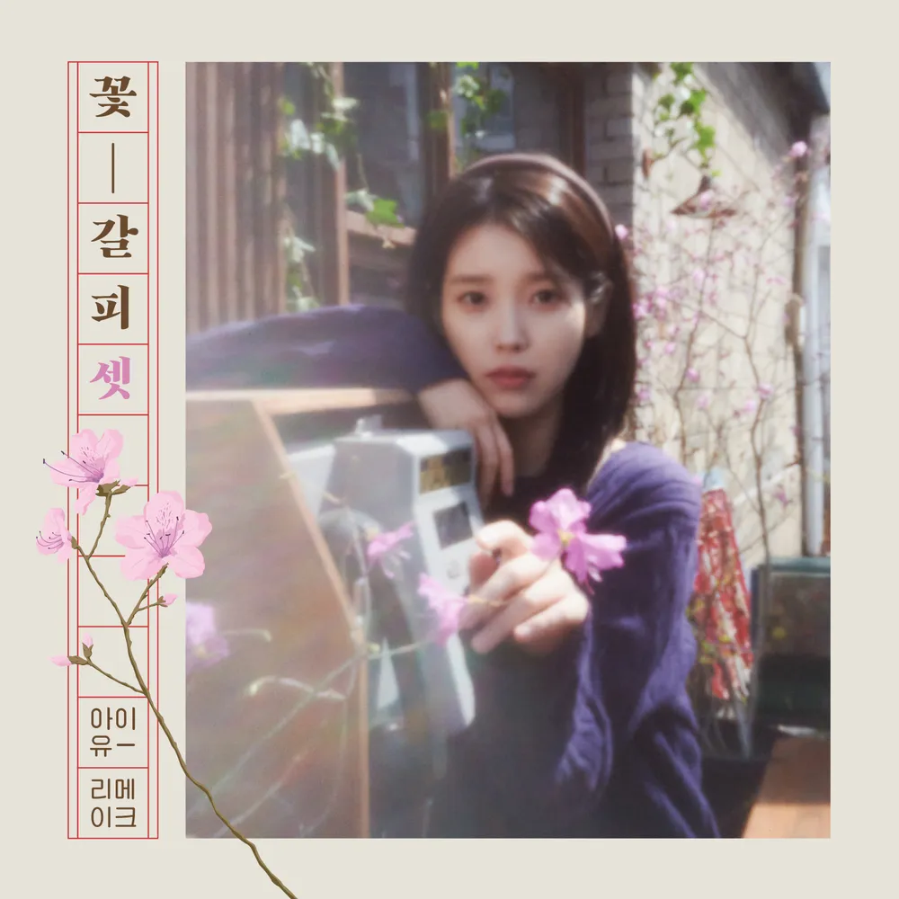

안녕하세요, 라보엠입니다.
오늘은 8년 만에 돌아온 아이유의 리메이크 앨범, ‘꽃갈피 셋’의 타이틀곡 ‘Never Ending Story’를 소개하겠습니다. 부활의 명곡을 아이유만의 감성과 목소리로 새롭게 해석한 이번 곡은, 추억과 현재가 아름답게 교차하는 순간을 선물합니다. ‘꽃갈피’ 시리즈를 기다려온 팬이라면, 이번 앨범이 주는 아날로그 감성에 더욱 깊이 빠져들 수밖에 없을 것 같습니다.
꽃갈피 셋, 그 특별한 리메이크의 의미

‘꽃갈피’ 시리즈는 아이유가 한국 대중음악사의 명곡들을 자신만의 색으로 재해석해 선보이는 프로젝트입니다. 2014년 ‘꽃갈피’, 2017년 ‘꽃갈피 둘’에 이어 2025년 ‘꽃갈피 셋’이 공개되었죠. 이번 앨범에는 부활의 ‘Never Ending Story’를 비롯해 박혜경의 ‘빨간 운동화’, 서태지의 ‘10월 4일’, 롤러코스터의 ‘Last Scene’, 신중현과 엽전들의 ‘미인’, 화이트의 ‘네모의 꿈’ 등 총 6곡이 수록되어 있습니다. 아이유는 원곡의 매력을 존중하면서도, 자신만의 서정적이고 따뜻한 목소리로 곡들을 새롭게 탄생시켰습니다.
아이유의 목소리로 다시 태어난 ‘Never Ending Story’
부활의 ‘Never Ending Story’는 2002년 발표 이후 꾸준히 사랑받아온 명곡입니다. 이번 아이유 버전은 서동환 작곡가가 피아노와 스트링을 중심으로 편곡해, 몽환적이고 감성적인 분위기를 더했습니다. 아이유의 청아한 음색과 섬세한 감정선이 어우러져, 익숙한 멜로디와 가사가 완전히 새로운 감동으로 다가옵니다. 특히 “그리워하면 언젠가 만나게 되는 / 어느 영화와 같은 일들이 이뤄져가기를”이라는 후렴구는, 아이유의 목소리로 들을 때 한층 더 깊은 울림을 줍니다.
‘Never Ending Story’ 뮤직비디오는 영화 8월의 크리스마스를 오마주해 제작되었습니다. 아이유와 배우 허남준이 주연을 맡아, 설레는 만남부터 애틋한 이별까지 한 편의 감성 영화처럼 그려냈습니다. 비 내리는 자연 풍경과 피아노 선율, 그리고 두 주인공의 섬세한 감정 연기가 어우러져, 곡의 분위기를 극대화합니다. 특히 마지막 장면의 여운은, 노래가 끝난 뒤에도 오랫동안 마음에 남습니다.
아날로그 감성과 세대를 뛰어넘는 공감
아이유의 ‘꽃갈피 셋’은 아날로그 감성을 현대적으로 풀어낸 웰메이드 리메이크 앨범입니다. 원곡을 기억하는 세대에게는 깊은 향수와 추억을, 아이유의 음악을 처음 접하는 분들에게는 신선한 감동을 전합니다. 앨범 패키지 역시 진달래 키링, 증명사진, 포토북 등 고급스럽고 소장가치 높은 구성으로 팬들의 마음을 사로잡았습니다.
이번 앨범에는 다양한 뮤지션들이 피처링으로 참여해 완성도를 높였습니다. ‘미인’에는 바밍타이거, ‘Last Scene’에는 원슈타인, ‘네모의 꿈’에는 이진아와 구름이 참여해 곡마다 새로운 매력을 더했습니다. 아이유는 각 곡의 원곡 분위기를 존중하면서도, 자신만의 해석과 감성을 담아내 팬들에게 또 한 번의 감동을 선사합니다.
Never Ending Story - 노래 가사
손 닿을 수 없는 저기 어딘가
오늘도 난 숨 쉬고 있지만
너와 머물던 작은 의자 위에
같은 모습의 바람이 지나네
너는 떠나며 마치 날 떠나가듯이
멀리 손을 흔들며
언젠가 추억에 남겨져 갈 거라고
그리워하면 언젠가 만나게 되는
어느 영화와 같은 일들이 이뤄져 가기를
힘겨워 한 날에 너를 지킬 수 없었던
아름다운 시절 속에 머문 그대이기에
너는 떠나며 마치 날 떠나가듯이
멀리 손을 흔들며
언젠가 추억에 남겨져 갈 거라고
그리워하면 언젠가 만나게 되는
어느 영화와 같은 일들이 이뤄져 가기를
힘겨워 한 날에 너를 지킬 수 없었던
아름다운 시절 속에 머문 그대여
그리워하면 언젠가 만나게 되는
어느 영화와 같은 일들이 이뤄져 가기를
힘겨워 한 날에 너를 지킬 수 없었던
아름다운 시절 속에 머문 그대이기에
맺음말
아이유의 ‘Never Ending Story’는, 시간의 흐름 속에서도 변하지 않는 추억과 사랑, 그리고 음악의 힘을 다시 한 번 느끼게 해줍니다. ‘꽃갈피 셋’은 단순한 리메이크 앨범을 넘어, 세대를 아우르는 공감과 위로의 메시지를 담고 있습니다. 오늘 하루, 아이유의 목소리와 함께 오래된 추억을 다시 꺼내보는 건 어떨까요? ‘Never Ending Story’가 여러분의 마음에 오래도록 남길 바라며, 아이유의 음악 여정도 계속 기대해봅니다.